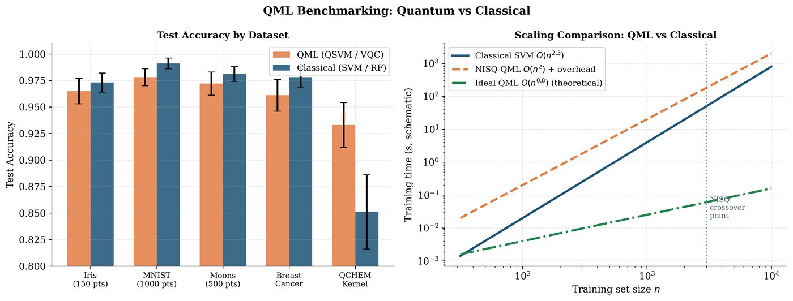

Chapter 23: Quantum Advantage Theory and Benchmarking¶
Demonstrating quantum advantage in machine learning requires both a computational complexity separation between quantum and classical algorithms, and a practically relevant task where quantum hardware outperforms the best classical alternatives. This chapter presents the theoretical frameworks for quantum advantage, known separations, dequantization results, and guidelines for rigorous QML benchmarking.
Learning Objectives
By the end of this chapter, you will be able to:
-
State the formal conditions for exponential and polynomial quantum advantage
-
Explain known quantum learning advantages (query complexity, sample complexity)
-
Describe dequantization and its implications for QML claims
-
Design fair benchmarks comparing QML to classical methods
-
Interpret quantum advantage claims critically using the Bowles (2024) criteria
23.1 Computational Complexity Background¶
Definition: Key Complexity Classes
-
BPP: Languages decidable by a classical probabilistic Turing machine with error \(\leq 1/3\) in polynomial time.
-
BQP: Languages decidable by a quantum Turing machine with error \(\leq 1/3\) in polynomial time.
-
QMA: Quantum analogue of NP: problems verifiable by a quantum verifier given a polynomial-size quantum certificate.
-
SZK: Statistical zero-knowledge problems (believed hard for both BPP and BQP).
Current belief: \(\text{BPP} \subseteq \text{BQP} \subseteq \text{PSPACE}\), with \(\text{BPP} \neq \text{BQP}\) strongly conjectured.
23.2 Quantum Advantage in Machine Learning¶
23.2.1 Query Complexity Separations¶
Fourier sampling (Bernstein-Vazirani): A quantum learner can identify a hidden linear function with \(O(1)\) queries; classical requires \(\Omega(n)\).
Learning graph states: Aaronson (2007) showed that certain \(n\)-qubit quantum states can be PAC-learned with \(O(n)\) quantum examples but require \(\Omega(2^n/n)\) classical samples.
Definition: Sample Complexity Quantum Advantage (Huang et al., 2021)
Huang et al. (Huang et al. 2021) proved a rigorous quantum learning advantage: There exists a learning task where:
-
Quantum learner: \(O(n)\) quantum examples suffice
-
Classical learner: \(\Omega(2^n)\) classical examples required
The task: predicting properties of quantum states output by shallow quantum circuits.
23.2.2 The Liu-Gyurik-Dunjko Advantage (2021)¶
Liu et al. (Liu et al. 2021) showed quantum kernel methods give an exponential speedup for learning the discrete logarithm function over classical kernel methods — but this is based on the computational hardness of DLP (no free lunch: hardness is necessary for advantage).
23.2.3 Quantum Kernel Advantage Theorem¶
Definition: Quantum Kernel Advantage Conditions (Liu et al., 2021)
A quantum kernel \(k_Q\) provides a provable computational advantage over all classical kernels if and only if:
-
The data is generated from a quantum process (quantum data hypothesis)
-
The quantum kernel is efficiently computable
-
Predicting with \(k_Q\) is classically hard (tied to a hard computational problem)
For classical data, quantum kernels are unlikely to provide computational advantage beyond what classical kernels can achieve.
23.3 Dequantization¶
Definition: Dequantization (Tang, 2019)
Dequantization (Tang 2019) shows that classical algorithms with sample-and-query access (SQ access) to data can match the efficiency of quantum algorithms that use quantum RAM.
SQ access to a matrix \(A\): given index \(i\), sample from row \(i\) proportionally to \(|A_{ij}|^2\), and query individual entries.
Tang’s result: Quantum recommendation systems (Kerenidis-Prakash) claiming exponential speedup are dequantizable to classical \(O(\text{poly}(n)))\).
Implications for QML:
-
Many early QML speedup claims assumed QRAM access; classical SQ access (cheap data structures) recovers the same complexity.
-
Genuine quantum advantage for ML requires either: (a) quantum data (output of quantum processes), or (b) computational hardness beyond linear algebra (discrete logarithm, etc.)
Important
The quantum data hypothesis: Quantum ML models are most likely to outperform classical models when the input data itself is quantum (e.g. quantum sensor output, molecular simulation data). For purely classical tabular data, quantum advantage in the NISQ era is unlikely to be exponential.
23.4 Fair Benchmarking¶

23.4.1 Bowles et al. (2024) Benchmarking Criteria¶
Bowles et al. (Bowles et al. 2024) identified systematic biases in QML benchmarking:
-
Dataset bias: QML tested on toy datasets (low-dimensional, few samples) where classical methods also perform well.
-
Hyperparameter imbalance: Classical baselines under-tuned; quantum models over-tuned.
-
Parameter count mismatch: QML models compared against classical models with vastly different parameter counts.
-
Missing baselines: Simple classical models (linear SVM, MLP) not included.
Algorithm: Fair QML Benchmark Protocol
-
Data: Use standardized, real-world datasets (not synthetic adversarial examples). Include train/val/test splits with cross-validation.
-
Classical baselines: Include MLP, SVM (RBF/polynomial), random forest, gradient boosting. Tune hyperparameters on validation set.
-
Parameter parity: Match parameter counts between quantum and classical models, or report accuracy vs. parameters.
-
Resource reporting: Report wall clock time, number of circuit executions, number of shots, hardware access cost.
-
Statistical significance: Run 5+ random seeds, report mean \(\pm\) std. Use Mann-Whitney U test for significance (\(p < 0.05\)).
-
Scaling: Report performance vs. data size \(n\) and model size.
23.5 Quantum Volume and Benchmarks¶
Definition: Quantum Volume (IBM, 2019)
Quantum volume (QV) (Cross et al. 2019) is a single-number hardware benchmark measuring the largest random square circuit (\(n\times n\) depth) that a device can implement with fidelity \(> 2/3\) (heavy output generation):
where \(n_{\text{eff}}\) is effective qubits and \(d_{\text{eff}}\) effective depth. Higher QV = more capable hardware.
QML-relevant metrics:
-
Circuit Layer Operations per Second (CLOPS): Speed of circuit execution
-
EPLG (Error Per Layered Gate): Layer-level error rate
-
Randomized benchmarking fidelity: Average gate error
23.6 Implementation: Rigorous QML Benchmark¶
import pennylane as qml
import numpy as np
from sklearn.datasets import make_classification
from sklearn.model_selection import StratifiedKFold
from sklearn.svm import SVC
from sklearn.ensemble import RandomForestClassifier
from sklearn.neural_network import MLPClassifier
from sklearn.metrics import accuracy_score, roc_auc_score
from scipy.stats import mannwhitneyu
import torch
# -- Generate standardized benchmark dataset -------------------
np.random.seed(42)
X, y = make_classification(
n_samples=200,
n_features=8,
n_informative=4,
n_redundant=2,
random_state=42
)
# Normalize for quantum encoding
from sklearn.preprocessing import MinMaxScaler
scaler = MinMaxScaler(feature_range=(0, np.pi))
X_q = scaler.fit_transform(X[:, :4]) # use 4 features for 4-qubit QML
# -- Quantum model ---------------------------------------------
n_qubits = 4
n_layers = 2
dev = qml.device("default.qubit", wires=n_qubits)
@qml.qnode(dev, interface="torch", diff_method="parameter-shift")
def qml_circuit(inputs, weights):
qml.AngleEmbedding(inputs, wires=range(n_qubits), rotation='Y')
qml.StronglyEntanglingLayers(weights, wires=range(n_qubits))
return qml.expval(qml.PauliZ(0))
weight_shape = (n_layers, n_qubits, 3)
def train_qml(X_tr, y_tr, X_te, y_te, epochs=100):
weights = torch.tensor(
np.random.uniform(-np.pi, np.pi, weight_shape),
dtype=torch.float32, requires_grad=True
)
opt = torch.optim.Adam([weights], lr=0.05)
crit = torch.nn.BCELoss()
X_tr_t = torch.tensor(X_tr, dtype=torch.float32)
y_tr_t = torch.tensor(y_tr, dtype=torch.float32)
X_te_t = torch.tensor(X_te, dtype=torch.float32)
ql = qml.qnn.TorchLayer(qml_circuit, {"weights": weight_shape})
for _ in range(epochs):
opt.zero_grad()
out = torch.sigmoid(ql(X_tr_t)).squeeze()
loss = crit(out, y_tr_t)
loss.backward()
opt.step()
with torch.no_grad():
pred = torch.sigmoid(ql(X_te_t)).squeeze().numpy()
return pred, (pred > 0.5).astype(int)
# -- Classical models -----------------------------------------
classifiers = {
"SVM (RBF)": SVC(kernel='rbf', C=10, probability=True),
"Random Forest": RandomForestClassifier(n_estimators=100, random_state=42),
"MLP (4 hidden)": MLPClassifier(hidden_layer_sizes=(16, 8), max_iter=500,
random_state=42),
}
# -- Fair cross-validation ------------------------------------
cv = StratifiedKFold(n_splits=5, shuffle=True, random_state=42)
results = {k: [] for k in list(classifiers.keys()) + ["QSVM", "QML"]}
for fold, (train_idx, test_idx) in enumerate(cv.split(X, y)):
X_tr, X_te = X[train_idx], X[test_idx]
y_tr, y_te = y[train_idx], y[test_idx]
X_tr_q, X_te_q = X_q[train_idx], X_q[test_idx]
# Classical models
for name, clf in classifiers.items():
clf.fit(X_tr, y_tr)
pred_proba = clf.predict_proba(X_te)[:, 1]
auc = roc_auc_score(y_te, pred_proba)
results[name].append(auc)
# Quantum ML model
pred_q, _ = train_qml(X_tr_q, y_tr, X_te_q, y_te, epochs=60)
auc_q = roc_auc_score(y_te, pred_q)
results["QML"].append(auc_q)
fold_str = ', '.join(f'{k}={v[-1]:.3f}' for k, v in results.items())
print(f"Fold {fold+1}: {fold_str}")
# -- Statistical comparison ------------------------------------
print("\n===== RESULTS (AUC mean +/- std) =====")
for name, aucs in results.items():
if len(aucs) > 0:
print(f"{name:20s}: {np.mean(aucs):.4f} +/- {np.std(aucs):.4f}")
# Mann-Whitney test: QML vs best classical
best_classical = max(
[(k, v) for k, v in results.items() if k != "QML"],
key=lambda kv: np.mean(kv[1])
)
if results["QML"]:
stat, p = mannwhitneyu(results["QML"], best_classical[1], alternative='two-sided')
print(f"\nMann-Whitney U (QML vs {best_classical[0]}): "
f"stat={stat:.1f}, p={p:.4f}")
if p < 0.05:
winner = "QML" if np.mean(results["QML"]) > np.mean(best_classical[1]) \
else best_classical[0]
print(f"Significant difference: {winner} wins (p<0.05)")
else:
print("No significant difference (p>=0.05)")
23.7 Chapter Summary¶
Chapter Summary
-
Quantum advantage: Rigorously requires a computational complexity separation (BPP vs. BQP) or sample complexity separation for learning. Known provable separations exist (Huang 2021, Liu 2021) but require either quantum data or computational hardness.
-
Dequantization: Classical SQ access matches QRAM-based quantum algorithms for many ML tasks (Tang 2019). Genuine advantage requires quantum data.
-
Fair benchmarking: Bowles (2024) criteria: matched resources, tuned baselines, real datasets, statistical significance tests.
-
Quantum volume: Single-number hardware benchmark measuring effective circuit size implementable above \(2/3\) fidelity.
-
Near-term outlook: NISQ QML unlikely to show exponential advantage on classical data; competitive performance on specific structured tasks (chemistry, optimization) is achievable.
Exercises
Exercise . Explain why Tang’s dequantization result implies that quantum recommendation systems do not provide an exponential advantage over classical algorithms with SQ data access. What assumption did the original quantum algorithm rely on?
Exercise . Design a fair benchmark comparing a 4-qubit QSVM against classical SVM on the Iris dataset. What hyperparameters should be matched? What statistical test should be used to compare results?
Exercise . Read Huang et al. (2021) “Power of Data in Quantum Machine Learning.” Identify the specific learning task that demonstrates quantum advantage and explain why classical algorithms require exponentially more samples.
Further Reading
-
Huang et al. (2021) (Huang et al. 2021) — quantum learning advantage via quantum data
-
Liu et al. (2021) (Liu et al. 2021) — quantum kernel advantage
-
Tang (2019) (Tang 2019) — dequantization of quantum recommendation
-
Bowles et al. (2024) (Bowles et al. 2024) — fair QML benchmarking
-
Cross et al. (2019) (Cross et al. 2019) — quantum volume benchmark